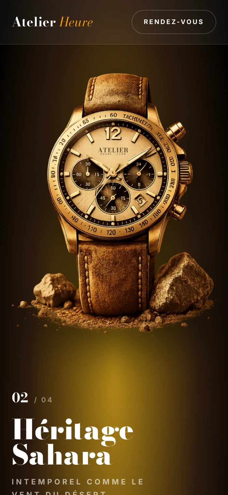
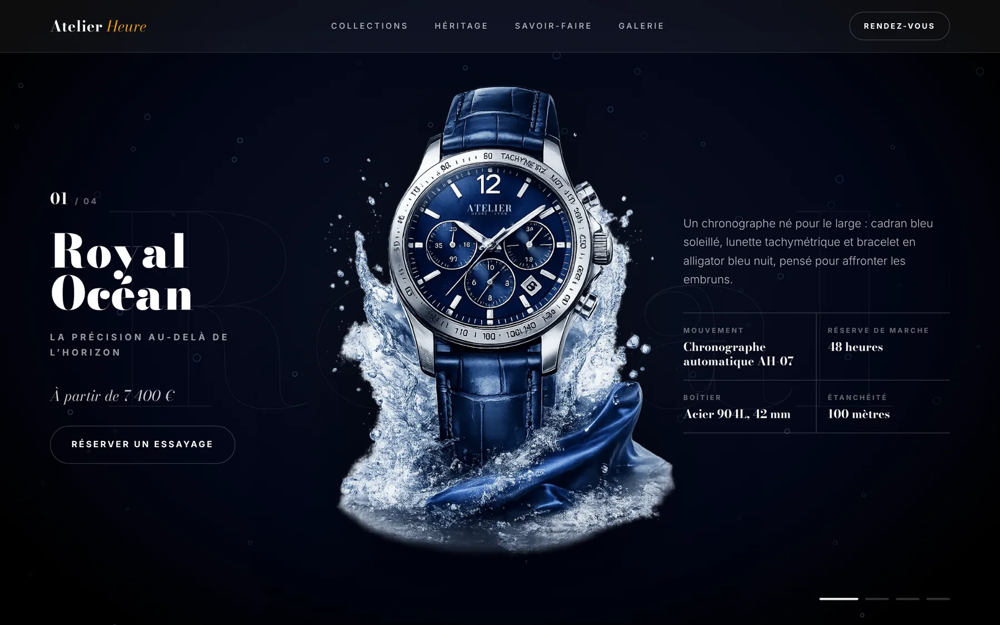
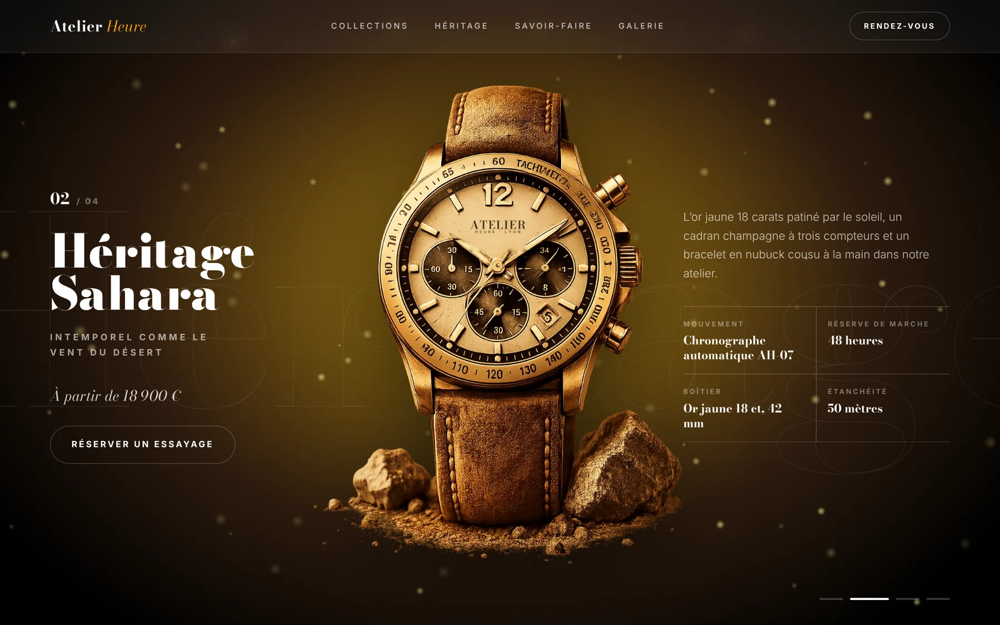
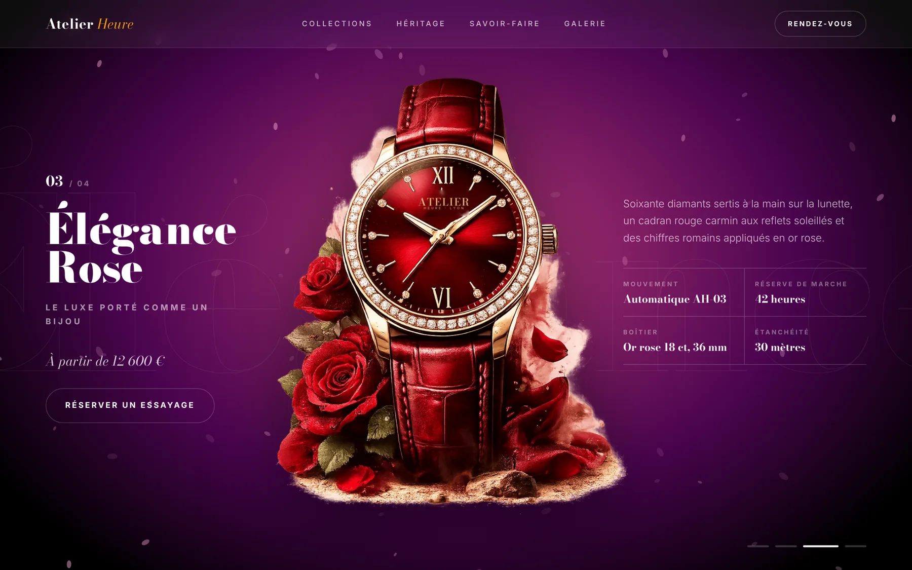
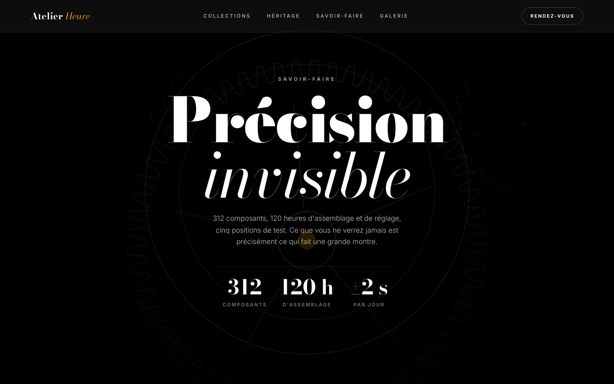
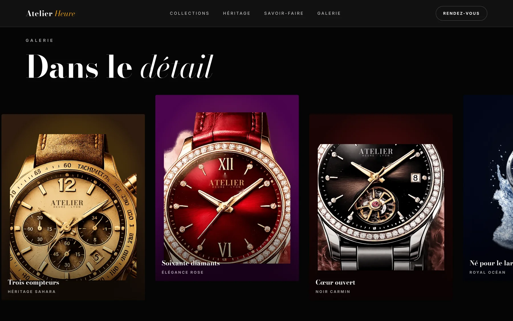
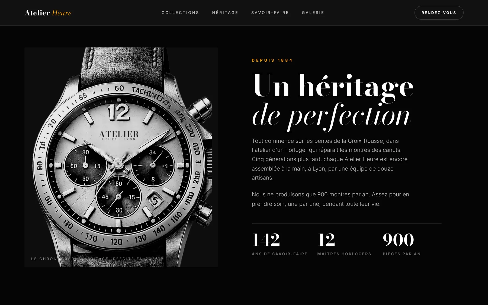
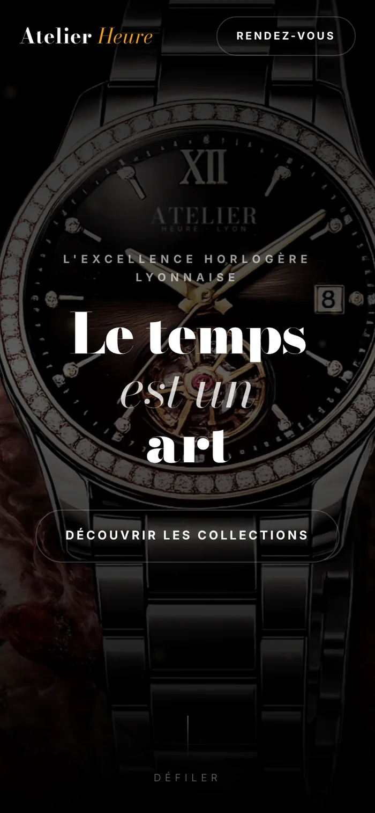
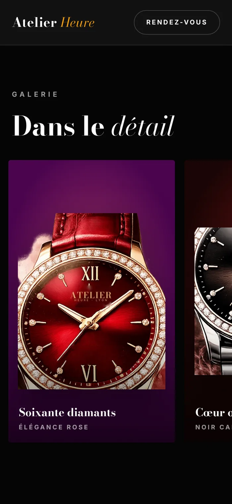

Concept personnel — 2026
Une maison horlogère lyonnaise imaginaire, et un site qui prend le temps : chaque collection a sa scène, sa couleur et son atmosphère, révélées au fil du défilement.
- Type
- Site vitrine de luxe
- Année
- 2026
- Rôle
- Direction artistique, motion design, retouche, développement
- Outils
- GSAP, ScrollTrigger, Lenis, Canvas, SVG
- Statut
- Concept — maison fictive
- Prototype
- Voir en ligne ↗


✦Concept personnel : Atelier Heure est une maison fictive. Les photographies de montres proviennent d'un kit de ressources ; j'ai retouché les cadrans pour y effacer la marque d'origine et y apposer la signature « Atelier Heure ».
Le luxe se raconte, il ne se liste pas.
Les sites horlogers classiques alignent des fiches produit. Ici, chaque collection occupe tout l'écran et devient une scène : la montre arrive au centre, l'ambiance change de couleur, des particules installent un décor.
Le rythme est lent et maîtrisé, comme dans une boutique où l'on vous présente une pièce à la fois : défilement fluide, sections épinglées, révélations progressives.
Noir absolu, ambre & quatre univers.
Un fond noir pour faire briller les métaux, du blanc en plusieurs opacités pour la hiérarchie, et l'ambre pour l'héritage. Chaque collection apporte sa propre palette. Bodoni Moda, très contrastée, pour le prestige ; Inter, fine, pour la lisibilité.
Le temps est un art
Bodoni Moda
Chronographe automatique AH-07
Inter

Quatre scènes, un seul écran.
La section est épinglée : en défilant, on passe d'une collection à l'autre. La montre entre par le bas, le texte et les caractéristiques se remplacent en cascade, et le fond se transforme.
Chaque univers a ses propres particules dessinées en canvas : des bulles pour Royal Océan, de la poussière d'or pour Héritage Sahara, des pétales pour Élégance Rose, des braises pour Noir Carmin.

Héritage Sahara — poussière d’or

Élégance Rose — pétales
Des rouages dessinés en code.
La section « Précision invisible » reste fixe pendant le défilement : derrière le texte, un train de rouages en SVG tourne à des vitesses calculées selon le nombre de dents, et grossit lentement, comme si l'on s'approchait du mouvement.
La galerie défile à l'horizontale et se penche selon la vitesse du défilement. Un clic ouvre chaque détail en plein écran, avec navigation au clavier.

Rouages en SVG animés

Galerie — inclinaison selon la vitesse



Chaque détail compte.
Hero cinématique
Titre révélé ligne par ligne, montre en fond qui suit la souris, poussière d'or, et une sortie qui recule au défilement.
Collections épinglées
Quatre collections en plein écran, contenu remplacé en cascade, navigation par points.
Ambiances vivantes
Fond qui se transforme et particules propres à chaque univers, mises en pause hors de l'écran.
Rouages en SVG
Engrenages générés en code, vitesses cohérentes, anneaux qui tournent comme un mouvement.
Galerie & visionneuse
Défilement horizontal, inclinaison selon la vitesse, visionneuse plein écran avec flèches et clavier.
Retouche des visuels
Marque d'origine effacée des cadrans, signature « Atelier Heure · Lyon » ajoutée à chaque montre.
Dubaï Center

✦ Un projet en tête ?